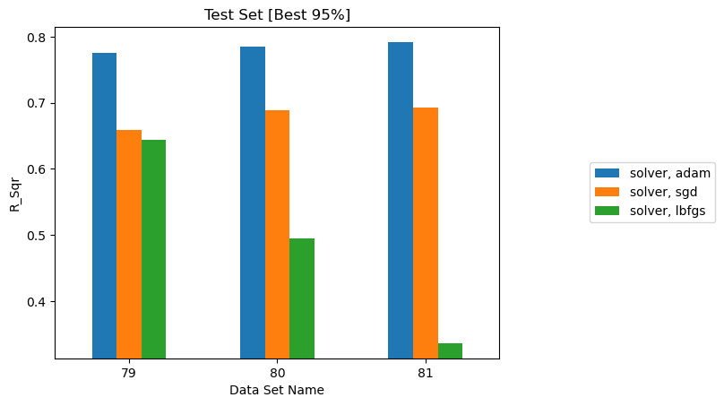
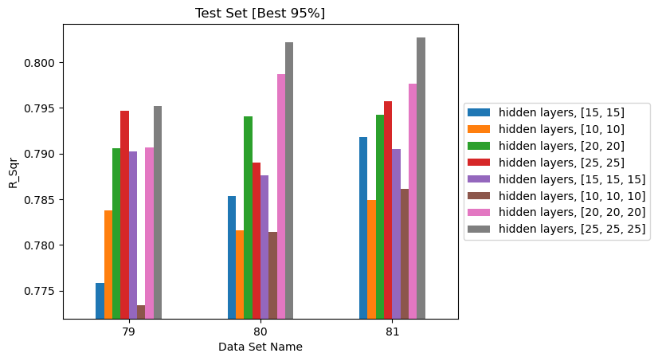
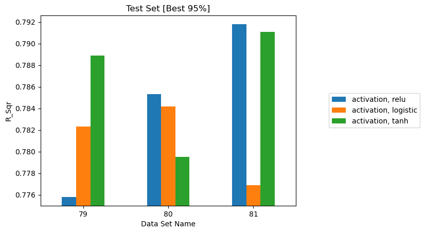
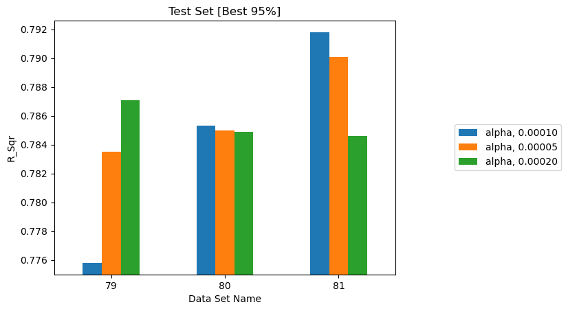
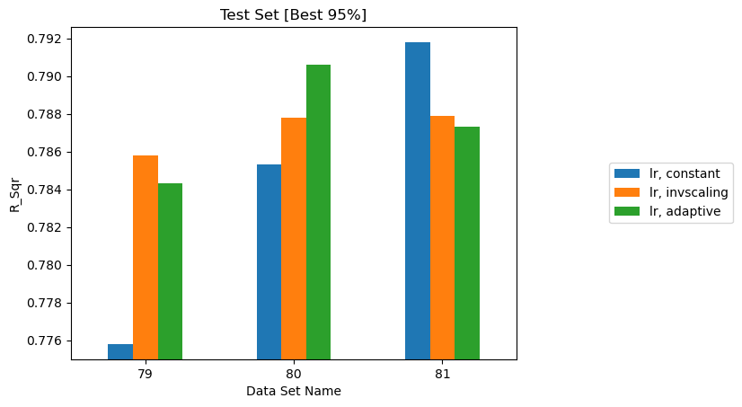
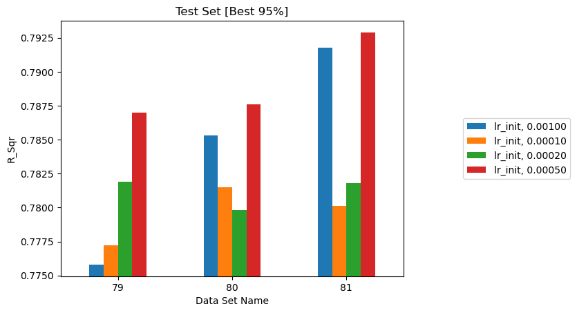
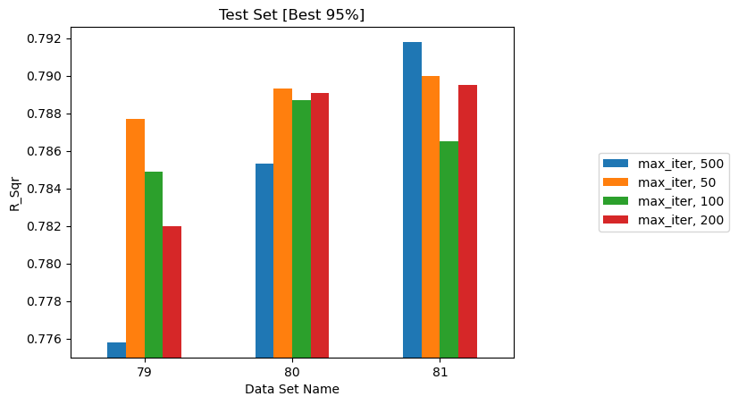
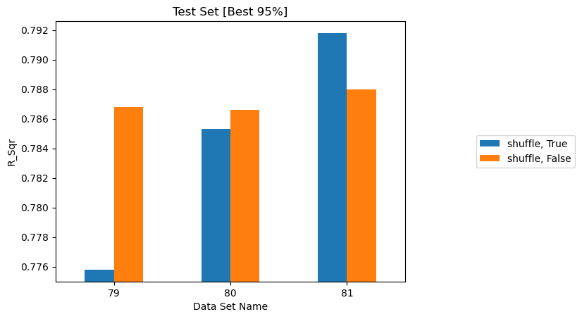

Multi-layer Perceptron¶
A study of the eight Multi-layer Perceptron hyperparameters available in MLAP.
What this study is for
The purpose of this study was to demonstrate that MLAP can launch and interpret large parametric studies across more than one model type — not to select a production model or to establish how well a neural network can predict fuel moisture.
The MLP runs were carried out in limited time to show the framework's versatility. The accuracy reported here could be improved substantially with better choices of data and model parameters, and the numbers below should not be read as a verdict on neural networks for this problem.
Relationship to the rest of the assessment¶
Random Forest is the baseline throughout this assessment. The trends in the other studies were established with Random Forest, and the parameters chosen there carry over into the MLP runs:
| Study | What it established |
|---|---|
| Data Sampling | How many reference times and grid points a dataset needs |
| Historical Data | \(t_{max\_history}\) = 32 h and \(t_{history}\) = 4 h as the working baseline |
| Physical Quantities | Which atmospheric variables to include |
| Random Forest Parameters | Which hyperparameters move the result for the baseline model |
The MLP study sits alongside those rather than extending them. It varies one model's hyperparameters on fixed data, to show that the same automation handles a second model family without change.
Datasets used¶
All eight studies use the same three datasets as the Random Forest study, differing only in spatial sample size, with \(t_{max\_history} = 32\) h and \(t_{history} = 4\) h:
| Dataset | Reference times | Grid points | Rows |
|---|---|---|---|
| 79 | 1,000 | 1,000 | 1,000,000 |
| 80 | 1,000 | 1,500 | 1,500,000 |
| 81 | 1,000 | 2,002 | 2,002,000 |
Reporting three datasets rather than one matters: an effect that does not reproduce across all three is not a real effect.
Baseline configuration¶
The MLP baseline, taken from json_train_model_MLP.json in the repository:
hidden_layer_sizes [15, 15], relu, adam, alpha 1e-4, constant learning
rate, learning_rate_init 0.001, max_iter 500, shuffle true, tol 1e-3.
Each study varies one parameter from that baseline.
MLP against Random Forest¶
On identical data, with both models at their defaults:
| Model | R² (test p95), dataset 81 |
|---|---|
| Random Forest, defaults | 0.8960 |
| MLP, baseline configuration | 0.7918 |
That gap of more than 10 percentage points is larger than any MLP hyperparameter effect measured below, with the single exception of choosing a broken solver. Its likely cause is examined in Why the MLP underperforms Random Forest — and it appears to be a fixable configuration problem rather than a property of the model.
Reading the plots below
The bar charts use an automatically scaled y-axis that does not start at
zero. Apart from the solver plot, all of them span under 0.02 in R², so
visually large differences are numerically small. Read the tables for
magnitude.
Effect of solver¶
Source: eval_020_MLP_solver
solver |
Dataset 79 | Dataset 80 | Dataset 81 |
|---|---|---|---|
adam |
0.7758 | 0.7853 | 0.7918 |
sgd |
0.6588 | 0.6888 | 0.6924 |
lbfgs |
0.6444 | 0.4946 | 0.3364 |

R² on the best 95% of test data for three solvers. lbfgs degrades as the
dataset grows — the only reversed trend in the assessment.
adam is decisively best, and the failure of lbfgs is the striking result: it
gets worse as the dataset grows, collapsing from 0.64 to 0.34.
That direction is the opposite of every other trend in this assessment, and it is
the expected signature of a full-batch optimizer that has not converged. lbfgs
processes the entire dataset per iteration, so with max_iter fixed at 500 it
falls progressively further from convergence as rows are added. It is unsuited to
datasets of this size.
Note
This result warrants re-investigation. The pattern above is consistent with a
convergence failure rather than a property of the solver itself — a rerun
with a much larger max_iter, or with convergence warnings captured, would
settle it.
Use adam.
Effect of hidden layer sizes¶
Source: eval_018_MLP_hidden_layers
hidden_layer_sizes |
Dataset 79 | Dataset 80 | Dataset 81 |
|---|---|---|---|
[10, 10] |
0.7838 | 0.7816 | 0.7849 |
[15, 15] (baseline) |
0.7758 | 0.7853 | 0.7918 |
[20, 20] |
0.7906 | 0.7941 | 0.7942 |
[25, 25] |
0.7947 | 0.7890 | 0.7957 |
[10, 10, 10] |
0.7734 | 0.7814 | 0.7861 |
[15, 15, 15] |
0.7902 | 0.7876 | 0.7905 |
[20, 20, 20] |
0.7907 | 0.7987 | 0.7976 |
[25, 25, 25] |
0.7952 | 0.8022 | 0.8027 |

R² on the best 95% of test data for eight architectures, two and three layers deep.
Larger networks do better, with [25, 25, 25] best on all three datasets. But
the whole range spans only about 0.018 in R², and even the best MLP configuration
(0.8027) remains far below an untuned Random Forest (0.8960).
The trend has not flattened at three layers of 25, so wider or deeper networks might improve further — though closing a 10-point gap by architecture search alone looks unlikely.
Effect of activation¶
Source: eval_019_MLP_activation
activation |
Dataset 79 | Dataset 80 | Dataset 81 |
|---|---|---|---|
relu (baseline) |
0.7758 | 0.7853 | 0.7918 |
logistic |
0.7823 | 0.7842 | 0.7769 |
tanh |
0.7889 | 0.7795 | 0.7911 |

R² on the best 95% of test data for three activation functions.
No reliable winner. tanh leads on dataset 79, relu on 81, and logistic
on neither — the ordering changes with the dataset. The spread is comparable to
run-to-run noise, so this choice does not matter at this network size.
Effect of alpha¶
Source: eval_021_MLP_alpha
alpha (L2 penalty) |
Dataset 79 | Dataset 80 | Dataset 81 |
|---|---|---|---|
| 5e-5 | 0.7835 | 0.7850 | 0.7901 |
| 1e-4 (baseline) | 0.7758 | 0.7853 | 0.7918 |
| 2e-4 | 0.7871 | 0.7849 | 0.7846 |

R² on the best 95% of test data for three L2 penalty strengths.
No effect. The ordering reverses between datasets 79 and 81, and the whole spread is under 0.008. Regularization strength is not a lever here — which is unsurprising given the network is not overfitting in the first place (see below).
Effect of learning_rate¶
Source: eval_022_MLP_lr
learning_rate |
Dataset 79 | Dataset 80 | Dataset 81 |
|---|---|---|---|
constant (baseline) |
0.7758 | 0.7853 | 0.7918 |
invscaling |
0.7858 | 0.7878 | 0.7879 |
adaptive |
0.7843 | 0.7906 | 0.7873 |

R² on the best 95% of test data for three learning-rate schedules.
No effect. All three schedules land within 0.005 of each other, with no
consistent ordering. Note that adam adapts its own step sizes, so the
learning_rate schedule has limited influence with this solver.
Effect of learning_rate_init¶
Source: eval_023_MLP_lr_init
learning_rate_init |
Dataset 79 | Dataset 80 | Dataset 81 |
|---|---|---|---|
| 1e-4 | 0.7772 | 0.7815 | 0.7801 |
| 2e-4 | 0.7819 | 0.7798 | 0.7818 |
| 5e-4 | 0.7870 | 0.7876 | 0.7929 |
| 1e-3 (baseline) | 0.7758 | 0.7853 | 0.7918 |

R² on the best 95% of test data for four initial learning rates.
The one parameter with a partly consistent signal. The two larger values (5e-4, 1e-3) beat the two smaller ones on all three datasets. The effect is small — about 0.01 — but its direction holds, which is more than the other parameters manage.
Smaller initial steps making things worse is itself informative: it points to training that halts before convergence rather than one that overshoots.
Effect of max_iter¶
Source: eval_024_MLP_max_iter
max_iter |
Dataset 79 | Dataset 80 | Dataset 81 |
|---|---|---|---|
| 50 | 0.7877 | 0.7893 | 0.7900 |
| 100 | 0.7849 | 0.7887 | 0.7865 |
| 200 | 0.7820 | 0.7891 | 0.7895 |
| 500 (baseline) | 0.7758 | 0.7853 | 0.7918 |

R² on the best 95% of test data for four iteration caps. Fifty iterations performs as well as five hundred.
Completely flat — and this is the most diagnostic result of the eight. Raising the iteration budget tenfold changes nothing. Training is therefore not stopping because it ran out of iterations; it is stopping on the convergence tolerance long before the cap. See below.
Effect of shuffle¶
Source: eval_025_MLP_shuffle
shuffle |
Dataset 79 | Dataset 80 | Dataset 81 |
|---|---|---|---|
true (baseline) |
0.7758 | 0.7853 | 0.7918 |
false |
0.7868 | 0.7866 | 0.7880 |

R² on the best 95% of test data with per-epoch shuffling on and off.
No effect. The difference is under 0.011 and changes sign between datasets.
Summary of the eight studies¶
| # | Parameter | Values tested | Best (dataset 81) | Spread | Consistent across datasets? |
|---|---|---|---|---|---|
| 1 | solver |
adam, sgd, lbfgs |
adam — 0.7918 |
0.456 | Yes — decisive |
| 2 | hidden_layer_sizes |
8 architectures | [25, 25, 25] — 0.8027 |
0.018 | Yes |
| 3 | learning_rate_init |
1e-4 … 1e-3 | 5e-4 — 0.7929 | 0.013 | Partly |
| 4 | activation |
relu, logistic, tanh |
relu — 0.7918 |
0.015 | No |
| 5 | alpha |
5e-5, 1e-4, 2e-4 | 1e-4 — 0.7918 | 0.008 | No |
| 6 | learning_rate |
constant, invscaling, adaptive | constant — 0.7918 | 0.005 | No |
| 7 | max_iter |
50, 100, 200, 500 | 500 — 0.7918 | 0.005 | No |
| 8 | shuffle |
true, false |
true — 0.7918 |
0.004 | No |
Only two of the eight produced an effect that reproduces across all three datasets. Both are structural — which optimizer runs, and how much capacity the network has — rather than fine-tuning. The remaining six vary by less than the scatter between datasets.
The best MLP found anywhere in these studies is 0.8027, against 0.8960 for a Random Forest with no tuning at all on the same data.
Why the MLP underperforms Random Forest¶
The natural assumption would be overfitting — a network memorising the training set and generalising poorly. The data say the opposite.
Comparing the baseline MLP against Random Forest on dataset 79:
| Train R² | Test R² | Gap | Train MSE | |
|---|---|---|---|---|
| MLP (baseline) | 0.6832 | 0.6807 | 0.0025 | 0.0014 |
| Random Forest | 0.9713 | 0.7978 | 0.1735 | 0.0001 |
The MLP performs no better on data it was trained on than on data it has never seen. It is not overfitting; it is underfitting badly — it never fits the training set in the first place. Random Forest, by contrast, fits training data almost perfectly and still generalises better despite a large gap.
This pattern holds across every configuration tested. Training R² on dataset 79
spans just 0.676 to 0.690 across all eight studies and roughly thirty
configurations — including the largest [25, 25, 25] network. Nothing that was
varied moved the training fit.
The likely cause: the convergence tolerance¶
tol is set to 1e-3. The MLP's converged training MSE is 0.0014.
scikit-learn stops training when the loss fails to improve by more than tol
for ten consecutive iterations. Here the tolerance is roughly 70% of the
entire final loss — an improvement that large is impossible after the first
few iterations, so the stopping criterion fires almost immediately.
Three observations corroborate this:
max_iteris flat. Fifty iterations matches five hundred, so the iteration cap is never reached.- Bigger networks barely help. Training R² moves only 0.676 → 0.701 from
[10, 10]to[25, 25, 25]. Added capacity goes unused because training halts before it can be exploited. - Smaller initial learning rates hurt. With a premature stop, slower progress per step means less progress overall.
The configured value is also ten times looser than scikit-learn's default of 1e-4, which would itself be marginal at this loss scale.
These eight studies are provisional
Every MLP result on this page was produced under the same stopping criterion. If the tolerance is indeed halting training early, then all eight studies measured variation around a premature stopping point rather than the effect of the parameters themselves. The comparison against Random Forest is not yet a fair one, and the MLP conclusions should be treated as provisional until the runs are repeated.
Contributing factors¶
Two further points are worth noting, though neither explains a gap this large:
Tree ensembles suit this problem. The features are 8 history times × 5 quantities, so they are strongly autocorrelated — consecutive history steps carry nearly the same information. Trees handle correlated features and sharp thresholds natively, whereas an MLP must learn those interactions from data.
Scaling matters for one model and not the other. Random Forest is unaffected by the scaler, but an MLP is sensitive to it. The scaler choice was never varied jointly with MLP hyperparameters, so any interaction between the two is unmeasured.
Potential future studies with MLP¶
The MLP is not yet a fair comparison. In rough order of expected value:
| Study | Rationale |
|---|---|
Rerun with tol at 1e-6 or 0 |
The single highest-value change. If premature stopping is the bottleneck, this alone may close much of the gap, and it costs one parameter change. |
Use early_stopping with validation_fraction |
Stops on validation score rather than a loss-improvement threshold, removing the dependence on an absolute tolerance calibrated to the label scale. |
| Repeat all eight studies afterwards | Their conclusions were drawn under the suspect criterion and need revisiting once training converges properly. |
| Extend the architecture search | [25, 25, 25] was the best and largest tested, and the trend had not flattened. Worth pushing further, but only after training actually converges. |
Vary scaler_type jointly with MLP parameters |
Scaling is irrelevant for Random Forest but not for an MLP, and the interaction is currently unmeasured. |
Revisit lbfgs with an adequate max_iter |
Its collapse as data grows is consistent with non-convergence rather than unsuitability. Either confirm or rule that out. |
Until at least the first of these is done, the honest summary is that Random Forest outperforms the MLP as configured, not that it outperforms MLPs on this problem.
MLP summary¶
| Parameter | Recommendation |
|---|---|
solver |
adam — the only choice that works as configured |
hidden_layer_sizes |
Larger helps; [25, 25, 25] was best tested |
tol |
Reduce it. At 1e-3 it appears to stop training prematurely |
| Everything else | No reliable effect measured — though that may be a consequence of the stopping problem rather than a property of the parameters |